1. The problem
My lab has two Linux VMs in two peered virtual networks. They reach each other by IP address, but names are another matter. Here is what each VM can and cannot resolve before any DNS work.
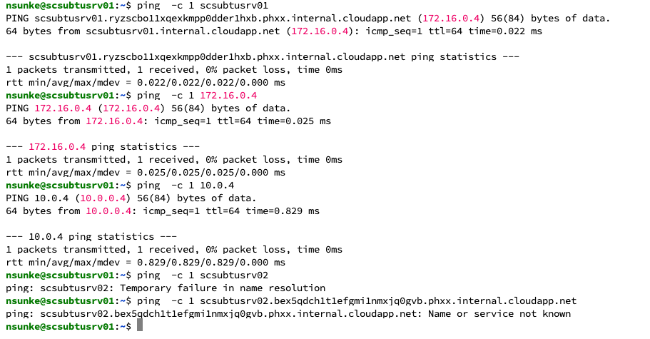
scsubtusrv01: its own name resolves, both IPs reply, but scsubtusrv02 cannot be resolved.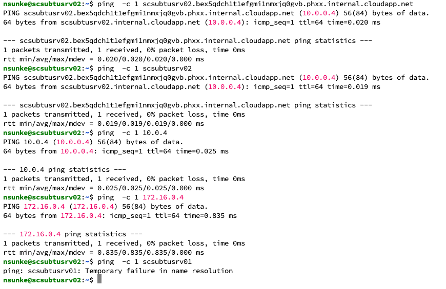
scsubtusrv02: the mirror image. The other VM's name fails.The output explains why. Every VNet gets Azure-provided DNS, which registers each VM under a suffix ending in internal.cloudapp.net. That suffix is different for each VNet, and it is only resolvable from inside that VNet. Peering joins the networks for traffic, but it does not join their DNS.
2. What a private DNS zone is
A private DNS zone is a DNS zone, such as scslabs.internal, that exists only inside the virtual networks you link to it. It is never visible on the internet.
- Virtual network link. Connects a VNet to the zone. VMs in a linked VNet can resolve every record in the zone.
- Auto-registration. An option on the link. When it is on, each VM in that VNet gets an A record in the zone automatically, and the record is removed when the VM is deleted.
- Manual records. You can add your own A, CNAME, MX, TXT and other records, for example a friendly alias for a database server.
3. Prerequisites
| Requirement | In this lab |
|---|---|
| Two virtual networks with non-overlapping address spaces | vnet-westus3-1 (172.16.x) and vnet-westus3-2 (10.0.0.0/16) |
| A VM in each VNet | scsubtusrv01 (172.16.0.4) and scsubtusrv02 (10.0.0.4), Ubuntu |
| Network connectivity between the VNets | VNet peering in state Connected |
| Both VNets using Azure-provided DNS | DNS servers set to Default on each VNet |
| Permission to create DNS zones and link VNets | Owner on the subscription |
Check the peering first. A DNS zone gives you names, not connectivity, so if the VMs cannot reach each other by IP, fix that before going further.
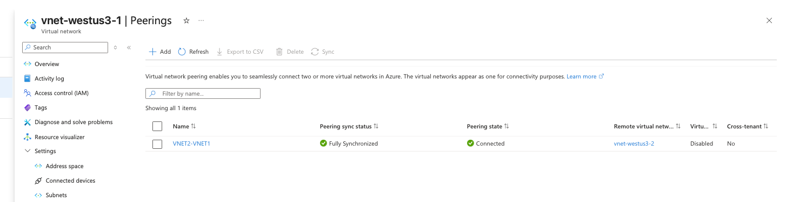
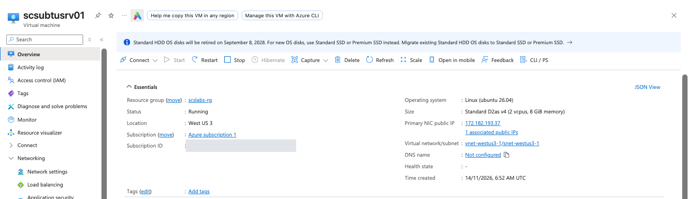
scsubtusrv01 sits in vnet-westus3-1. The VM name shown here is the name that gets registered in DNS.4. Steps
Step 1Open Private DNS zones
In the portal, search for Private DNS zones. The list is empty. Click Create.
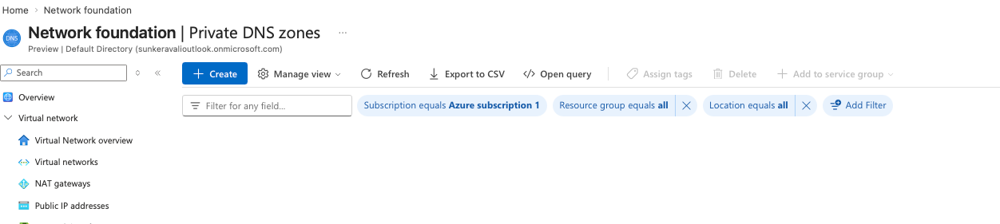
Step 2Create the zone
Choose the resource group and enter the zone name. I used scslabs.internal.
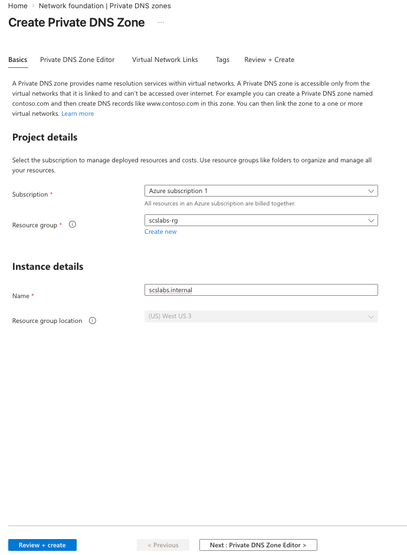
.local, which conflict with multicast DNS on Linux and macOS.
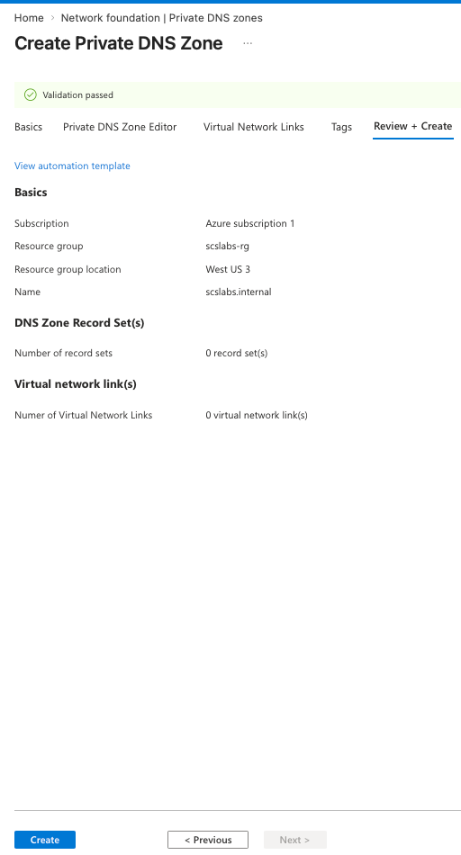
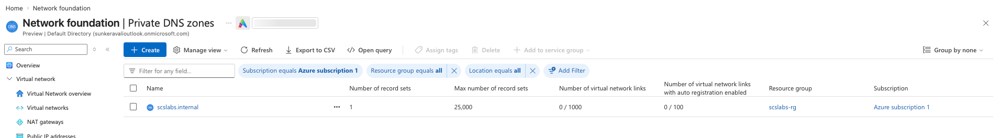
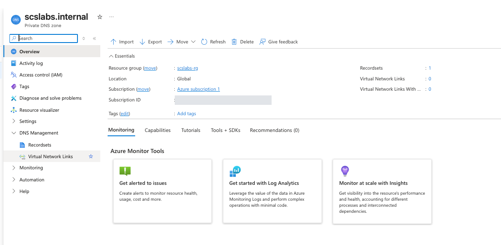
Step 3Link the first VNet
In the zone, open DNS Management → Virtual Network Links and click Add.
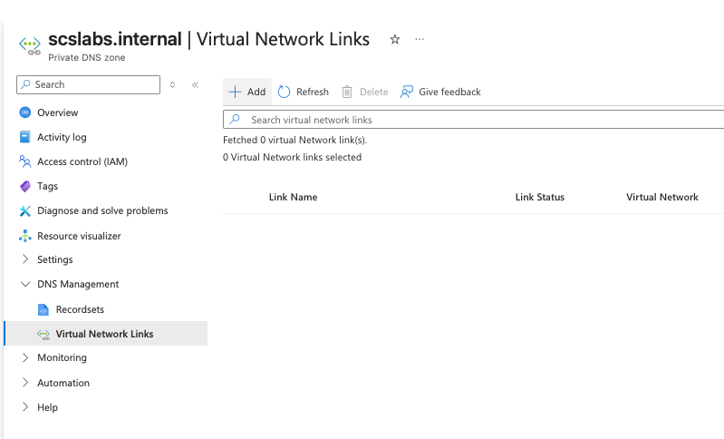
Give the link a name, select the VNet, and tick Enable auto registration.
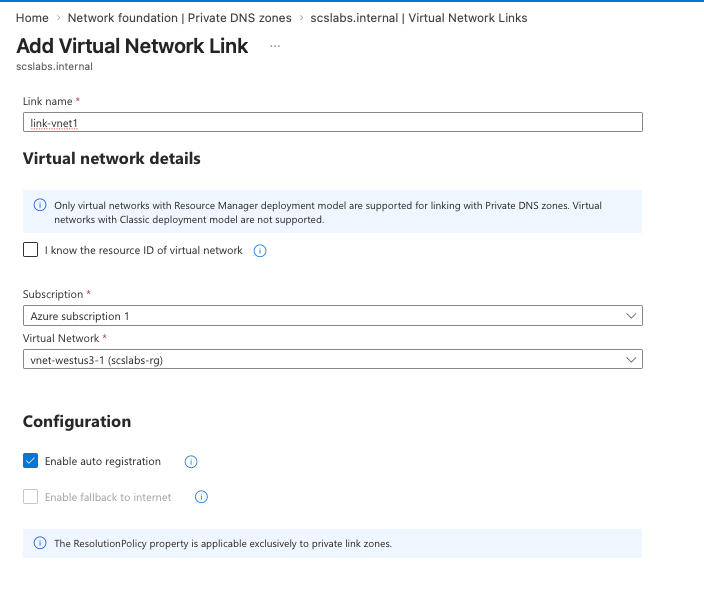
vnet-westus3-1 with auto-registration. The "fallback to internet" option is greyed out because it applies only to Private Link zones.Step 4Link the second VNet
Repeat for vnet-westus3-2 with a link named link-vnet2. Wait until both links show Completed.
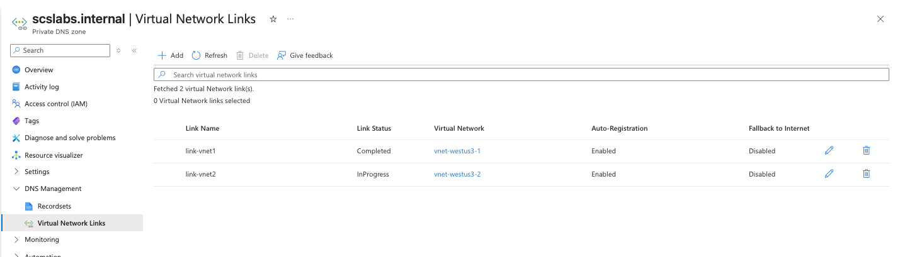
Step 5Check the records
Open DNS Management → Recordsets. Within a minute or two, both VMs appear on their own.
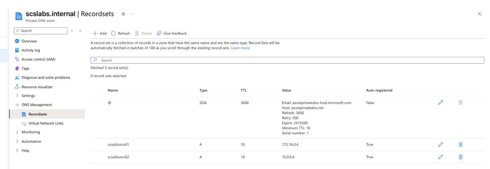
5. Test
From scsubtusrv01, look up and ping the other VM by its full name.
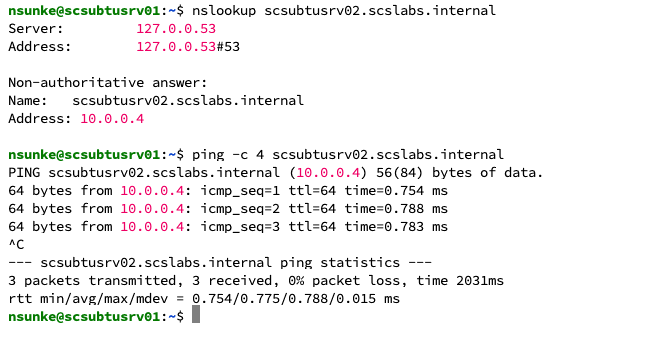
nslookup returns 10.0.0.4 and the ping replies in under 1 ms.Run the same check in the other direction from scsubtusrv02:
nslookup scsubtusrv01.scslabs.internal
ping -c 4 scsubtusrv01.scslabs.internalShort names still need one more step. To make ping scsubtusrv02 work without the suffix, add the zone as a search domain on each VM:
sudo resolvectl domain eth0 scslabs.internal
ping -c 4 scsubtusrv02This setting does not survive a reboot. For a permanent change, set the search domain in the VM's netplan configuration.
6. Troubleshooting
| Symptom | Likely cause | What to check |
|---|---|---|
| Name does not resolve (NXDOMAIN) | The VNet is not linked to the zone, or the link is not finished | Virtual Network Links shows the VNet with status Completed |
| No auto-registered records | Auto-registration is off on the link, or the VNet already auto-registers into another zone | The Auto-Registration column on the link shows Enabled |
| Name resolves, but ping or SSH fails | No network path between the VNets | Peering state is Connected; NSG rules allow the traffic |
| Name resolves to the wrong address, or not at all, on one VNet only | That VNet uses a custom DNS server that does not know about the zone | VNet DNS servers setting; forward to 168.63.129.16 if custom DNS is required |
| Full name works, short name fails | No search domain on the VM | resolvectl status, then add the search domain |
| Old IP returned after a change | Cached answer on the VM | sudo resolvectl flush-caches |
Useful commands on the VM:
# Which DNS servers and search domains is the VM using?
resolvectl status
# Ask Azure DNS directly, bypassing the local cache
nslookup scsubtusrv02.scslabs.internal 168.63.129.16
# Test the network path separately from DNS
ping -c 2 10.0.0.4
nc -zv 10.0.0.4 22Separate the two questions every time: does the name resolve, and can I reach the address? They are fixed in different places.
7. Limitations
- One registration zone per VNet. A VNet can auto-register into only one private zone. It can be linked to many other zones for resolution only.
- Auto-registration covers VMs only. Internal load balancers, private endpoints and other resources are not registered. Add those records by hand or let the service's own integration do it.
- Zone limits apply. As the portal showed: 25,000 record sets per zone, 1,000 VNet links, and 100 links with auto-registration.
- A link is not a network path. Linking a VNet gives it names only. Reaching the addresses still needs peering, a VPN or ExpressRoute.
- Not reachable from on-premises directly. Azure DNS at 168.63.129.16 answers only from inside Azure. On-premises clients need a DNS Private Resolver or a DNS forwarder VM.
- No conditional forwarding in the zone. A private zone only hosts records. Forwarding other domains elsewhere needs a DNS Private Resolver ruleset.
- Custom DNS bypasses it. If a VNet points at your own DNS servers, those servers must forward to Azure DNS or the zone is ignored.
- Duplicate VM names collide. Two VMs with the same name in VNets that register into the same zone compete for one record. Keep VM names unique.
- Short names need a search suffix. Clients must use the full name unless a search domain is configured.
8. Cross-VNet DNS design
Two VNets and one zone is the simplest case. With many VNets, the same building blocks apply, and the design question becomes where the zones live and who links to them.
Option A: link every VNet to the same zone
This is what the lab does. Each VNet gets a link, with auto-registration where VMs should publish their names. It needs no extra services and works well for a handful of VNets.
Option B: central zones in a hub-and-spoke network
In a larger estate, keep all private DNS zones in one central subscription owned by the network team. Link the hub and every spoke VNet to them. Spokes register and resolve; nobody creates their own copy of a zone.
- Links work across subscriptions. A zone in the connectivity subscription can be linked to VNets in workload subscriptions, given the right permissions.
- Peering is not transitive, but DNS does not care. Two spokes resolve each other's names through the shared zone. Whether they can then connect depends on routing through the hub firewall.
- Private endpoints use the same pattern. Zones such as
privatelink.database.windows.netare kept centrally and linked to all VNets, so every network resolves a private endpoint to its private IP. - Automate the links. Use Azure Policy or your deployment pipeline to link each new spoke, so nobody forgets.
Option C: central resolver for VNets that cannot be linked
If a VNet uses custom DNS servers, or belongs to a team that cannot be given a link, point it at a DNS Private Resolver in the hub instead. The resolver's VNet is linked to the zones and answers on behalf of everyone who forwards to it. Section 10 covers the resolver.
9. Cross-region DNS design
A private DNS zone is a global resource. The zone overview in step 2 showed Location: Global. That makes cross-region name resolution simpler than most people expect: link VNets from any region to the same zone, and they all see the same records.
What you need for a cross-region setup
- One private zone. Create it once. It is not deployed to a region.
- A link from each VNet, in every region, with auto-registration where needed.
- A network path between the regions. Use global VNet peering, or connect each region's hub. DNS resolution does not need the peering, but reaching the resolved address does.
- Non-overlapping address spaces across all regions.
One zone or one zone per region?
| Single zone | Zone per region | |
|---|---|---|
| Example | scslabs.internal | wus3.scslabs.internal, cin.scslabs.internal |
| Names | db01.scslabs.internal | db01.wus3.scslabs.internal |
| Setup | Simplest: every VNet registers into one zone | Each VNet registers into its own region's zone and links to the others for resolution only |
| Best for | Small and medium estates with unique VM names | Large estates, or when the same VM name is reused in each region |
| Watch out for | Name collisions between regions | More links to manage; clients must know the region in the name |
Disaster recovery pattern
For a database that fails over between regions, do not hand the application a VM name. Add a manual record, such as ordersdb.scslabs.internal, that points at the current primary. On failover, update that one record to the standby's IP in the other region. Keep its TTL short so clients pick up the change quickly. The application's connection string never changes.
10. Hybrid DNS with on-premises
On-premises servers cannot query a private zone directly, and Azure VMs cannot resolve on-premises names through it either. Azure DNS Private Resolver bridges the two without any DNS server VMs. It sits in the hub VNet and has two kinds of endpoint.
- Inbound endpoint. Gets a private IP in the hub. On the on-premises DNS servers, add a conditional forwarder that sends
scslabs.internalto that IP, over the VPN or ExpressRoute connection. - Outbound endpoint and forwarding ruleset. A rule sends queries for
corp.example.comto the on-premises DNS servers. Link the ruleset to each VNet that needs to resolve corporate names. - Dedicated subnets. Each endpoint needs its own subnet delegated to the resolver.
- One resolver per region. The resolver is a regional service. In a multi-region design, deploy one in each region's hub and list both inbound IPs on the on-premises forwarder, so name resolution survives a regional outage.
- It is not cheap. The resolver is billed per endpoint per month, unlike the zone itself. Leave it out of a lab unless hybrid DNS is what you are practising.
11. Azure CLI version
# Create the zone
az network private-dns zone create \
--resource-group scslabs-rg \
--name scslabs.internal
# Link both VNets with auto-registration
az network private-dns link vnet create \
--resource-group scslabs-rg \
--zone-name scslabs.internal \
--name link-vnet1 \
--virtual-network vnet-westus3-1 \
--registration-enabled true
az network private-dns link vnet create \
--resource-group scslabs-rg \
--zone-name scslabs.internal \
--name link-vnet2 \
--virtual-network vnet-westus3-2 \
--registration-enabled true
# List the records
az network private-dns record-set a list \
--resource-group scslabs-rg \
--zone-name scslabs.internal \
--output table
# Optional: a manual alias record
az network private-dns record-set a add-record \
--resource-group scslabs-rg \
--zone-name scslabs.internal \
--record-set-name ordersdb \
--ipv4-address 10.0.0.4For a VNet in another resource group or subscription, pass its full resource ID to --virtual-network.
12. Cost and clean-up
A private DNS zone is billed per zone per month plus a small charge per million queries. For a lab, that comes to well under a dollar a month. Check the Azure DNS pricing page for current rates.
To remove the zone, delete the VNet links first. Azure will not delete a zone that still has links.
az network private-dns link vnet delete -g scslabs-rg -z scslabs.internal -n link-vnet1 --yes
az network private-dns link vnet delete -g scslabs-rg -z scslabs.internal -n link-vnet2 --yes
az network private-dns zone delete -g scslabs-rg -n scslabs.internal --yesKey takeaways
- Azure-provided DNS resolves names inside one VNet only. Peering does not extend it.
- A private DNS zone linked to several VNets gives them a shared namespace, and auto-registration keeps VM records up to date.
- DNS and connectivity are separate. A zone link gives names; peering, VPN or ExpressRoute gives the path.
- Private zones are global, so one zone can serve VNets in every region.
- At scale, keep zones central and link every VNet. For on-premises, add a DNS Private Resolver.